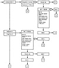

by Abraham Kandel
CRC Press, CRC Press LLC
ISBN: 084934297x Pub Date: 11/01/91
|
|
Fuzzy Expert Systems
by Abraham Kandel CRC Press, CRC Press LLC ISBN: 084934297x Pub Date: 11/01/91 |
| Previous | Table of Contents | Next |
D. L. Hudson and M. E. Cohen
The first medical expert system, MYCIN,1 was developed in 1975, shortly after the initial introduction of the expert system approach to decision making.2,3 Since that time, expert systems have been a popular approach to medical problem solving. These systems include broad range projects such as INTERNIST,4,5 which encompasses the entire field of internal medicine, as well as systems dealing with more specific medical problem domains.6-11 A number of survey papers describing expert systems in medicine have also appeared in the literature.12-15 The need for dealing with uncertain information was recognized even in the first of these systems.16 A number of expert systems have developed ad hoc techniques of dealing with uncertainty.1,17,18
In the same general time frame, the theoretical development of fuzzy logic techniques was proceeding, fueled by a desire to better represent the real world. This field was initiated by Zadeh in his 1965 paper.19 Since that time, theoretical development,20-26 as well as practical application27,28 of fuzzy logic and fuzzy set theory, in general, has progressed rapidly and, in particular, its application to expert systems.29-34 Fuzzy techniques have also been applied in a number of medical applications.35-37
The development of EMERGE, a rule-based medical expert system for the analysis of chest pain in the emergency room environment, was begun in 1979. EMERGE was designed to address some of the difficulties encountered in earlier expert systems, including machine dependence, time-consuming consultations, and difficulty in replacement of the knowledge base.38 Earlier systems were written in LISP and generally run on large-scale main frame computers possessed by a few medical institutions. In addition, rule searching was generally done by either forward or backward chaining, which resulted in very time-consuming consultations. Although the systems gave high level expert advice, they were not used in practice for these reasons. In order to counter the difficulties of machine dependence, EMERGE was written in standard Pascal in a memory-efficient manner to allow its use on microcomputers which, at that time, were just becoming popular.39 A hierarchical approach to rule searching was designed in order to speed the consultation process, a necessity in emergency situations. The knowledge base for EMERGE was derived from existing medical logic outlines known as criteria maps,40 a portion of which is shown in Figure 1. These maps had been developed over a number of years in consultation with medical experts and exist, not only for chest pain, but for approximately 20 medical applications.41 Conversion from one rule base to another was simplified since the overall structure of the maps was the same for all applications.
The EMERGE system is arranged in a hierarchical structure, with questions contained in the highest level which pertain to symptoms with far-reaching consequences. It is denoted the level zero control flow. When a rule is substantiated in the level zero control flow, rapid focus of attention is achieved by transfer to a subcontrol flow which contains questions pertinent to that disorder. This structure permits rapid decision making and avoids asking unnecessary questions.
The original version of EMERGE used certainty factors as an indication of the degree of seriousness of an illness.42 These were computed from scoring trees which were developed for each independent finding. They were then combined by ad hoc rules to give an overall certainty factor for each patient consultation.43
Current work on the EMERGE system involves inclusion of more sophisticated techniques of approximate reasoning.44 Three major areas have been revised. First, user input has been modified from simple y, n, or ? responses to permit input of a value indicating degree of presence of symptoms. Second, the original production rule format has been modified to permit weighting of antecedents. Finally, the traditional and/or binary logic has been generalized to permit inferences of rules in the new format. These three areas are the topic of this chapter and are discussed, in turn, in the following sections.

Figure 1 Portion of chest pain criteria map.
| Previous | Table of Contents | Next |
){kind=link}